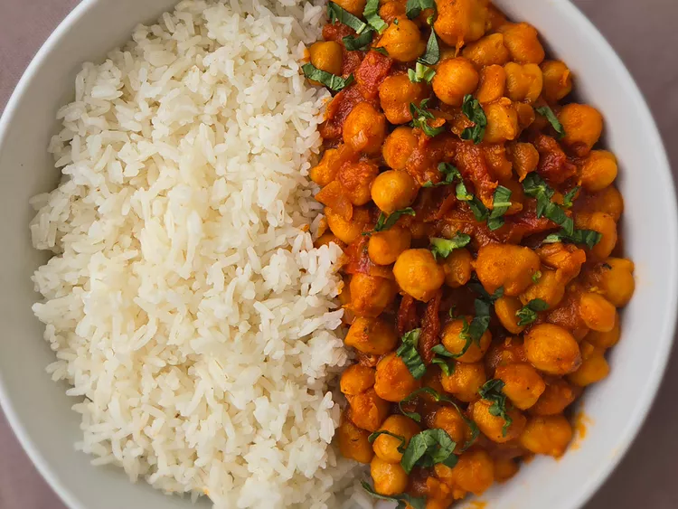

Marry me chickpeas

A lovely image of Marry Me Chickpeas.
My wife introduced me to this vegetarian recipe, and let me tell you, I was not dissapointed. It's a bit spicy, a bit tangy and oh, rich and creamy.
It's fanatastic to serve when you have guests over and is an absolute breeze to make.
Ingredients
- 2 Tbsp unsalted butter, 28g
- 4 cloves garlic, minced
- ½ tsp each salt, oregano, crushed red pepper flakes nad black ground pepper
- ½ cup sun-dried tomatoes, roughly chopped
- 1 cup vegetable broth, 236ml
- 2 425g cans chickpeas, drained
- 1 cup heavy cream, 250ml can sub half and half
- ½ cup grated permesan
- 2 Tbsp chopped fresh basil
Steps
- Flavor Base: Heat 2 Tbsp unsalted butter, 4 cloves garlic, ½ tsp each salt, oregano, crushed red pepper flakes, and ¼ tsp ground black pepper in a large saute pan or pot over medium heat. Cook for about 2 minutes, until garlic is fragrant.
- Fillings: Stir in ½ cup sun-dried tomatoes, 1 cup vegetable broth, and 2 15-oz cans chickpeas. Continue cooking on medium, uncovered, for 5 minutes.
- Finish: Remove from heat. Stir in 1 cup heavy cream ½ cup grated parmesan, and 2 Tbsp chopped fresh basil. Serve warm with crusty bread.
Home